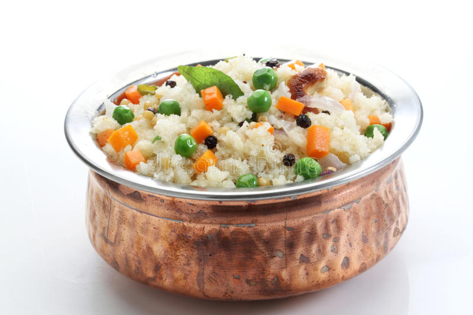

2 Tasty Recipes
Tasty Recipes To Try At Home: We have curated the best of tasty recipes to try at home and relish with family and friends.
1. Pancakes

Undoubtedly the kid's most favourite breakfast option, pancakes are fluffy delights to prepare at home. Whether you like them sweet or savoury, pancakes have a room for a lot of creativity with many flavours and toppings. From maple syrup, whipped cream to fruits, there are endless options to relish a plate of scrumptious, filling and wholesome pancakes!
2. Upma

One dish that you can savour at all times is the delicious, upma. You can call it an 'any time' dish due to its versatility to go with any course. A light and healthy snack from the South Indian cuisine, upma enjoys the versatility to be eaten in any meal from breakfast to snacks. Perfect for your kid's tiffin too, here is an upma recipe packed with the goodness of vermicelli along with urad dal and carrots, topped with peanuts.